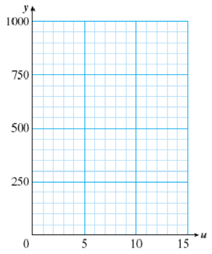

Section 3.4 Slope-Intercept Form
Subsection Writing a Linear Equation
In Lesson 3.3, we plotted data for the temperature inside an oven used to cure pottery.
| Time, \(x\) | 0 | 10 | 20 | 30 | 40 | 50 | 60 |
| Temperature, \(y\) | 70 | 74 | 78 | 82 | 86 | 90 | 94 |
We computed the slope of the graph, shown in the figure. The slope is

or \(m=0.4\) degrees per minute.
You can see from either the table or the graph that the \(y\)-intercept is the point \((0,70)\text{.}\) This means that the initial temperature inside the drying oven was 70 degrees.
Look Ahead.
If we know two pieces of information about a line: its slope and its initial value or \(y\)-intercept, we can write its equation.
Example 3.19.
Write an equation for the temperature, \(H\text{,}\) inside the pottery drying oven \(t\) minutes after the oven is turned on.
The initial temperature in the oven was 70 degrees, so \(H=70\) when \(t=0\text{.}\) The temperature rose at a rate of 0.4 degrees per minute, so we add 0.4 degrees to \(H\) for each minute that passes. After \(t\) minutes, we have added \(0.4t\) degrees, giving us a temperature of
We can also write the equation as \(H=0.4t+70\text{.}\)
Reading Questions Reading Questions
1.
What does the constant term in an equation tell us about the graph?
2.
What does the coefficient of the input variable tell us?
From Example 3.19, we see that the coefficients of a linear equation tell us something about its graph.
Coefficients of a Linear Equation.
- The constant term tells us the vertical intercept of the graph.
- The coefficient of the input variable tells us the slope of the graph.
Slope-Intercept Form.
A linear equation written in the form
is said to be in slope-intercept form. The coefficient \(m\) is the slope of the graph, and \(b\) is the \(y\)-intercept.
Reading Questions Reading Questions
3.
What does the \(y\)-intercept tell us in Example 3.19?
4.
What is the slope-intercept form of an equation?
Subsection Slope-Intercept Method of Graphing
A linear equation has the form \(Ax+By=C\text{,}\) and its graph is a straight line. We have already studied two methods for graphing linear equations:
- Make a table of values and plot points
- Find and plot the intercepts (the intercept method)
There is a third graphing method that makes use of the slope of the line. We can use the slope-intercept form to sketch a graph quickly, without having to plot a lot of points.
Example 3.20.
Graph the equation \(~y=\dfrac{3}{4}x-2\)
The slope of the line is \(\dfrac{3}{4}\) and its \(y\)-intercept is the point \((0,-2)\text{.}\) We begin by plotting the \(y\)-intercept, as shown in the figure. Next, we use the slope to find another point on the line.
gives the ratio of the change in \(y\)-coordinate to the change in \(x\)-coordinate as we move from any point on the line to another. Thus, starting at the point \((0,-2)\text{,}\) we move:
- 3 units up (the positive \(y\)-direction),then
- 4 units right (the positive \(x\)-direction )
to locate another point on the line. The coordinates of this new point are \((4,1)\text{.}\) Finally,we draw a line through the two points, as shown in the figure.
Look Closer.
To improve the accuracy of the graph in Example 3.20, we can find a third point on the line by writing the slope in an equivalent form. We change the sign of both numerator and denominator of the slope to get
Starting again from the \(y\)-intercept \((0,-2)\text{,}\) we now move 3 units down and 4 units left, and find the point \((-4,-5)\) on the graph.
Reading Questions Reading Questions
5.
Name two methods of graphing that we have already studied.
6.
When using the slope-intercept method, what is the first point we plot?
7.
How do we use the slope to find a second point on the line?
The slope-intercept method can be used to graph any non-vertical line.
To Graph a Line Using the Slope-Intercept Method.
- Write the equation in the form \(y=mx+b\text{.}\)
- Plot the \(y\)-intercept, \((0,b)\text{.}\)
- Write the slope as a fraction, \(m = \dfrac{\Delta y}{\Delta x}\text{.}\)
- Use the slope to find a second point on the graph: Starting at the \(y\)-intercept, move \({\Delta y}\) units in the \(y\)-direction, then \({\Delta x}\) units in the \(x\)-direction.
- Find a third point by moving \({-\Delta y}\) units in the \(y\)-direction, then \({-\Delta x}\) units in the \(x\)-direction, starting from the \(y\)-intercept.
- Draw a line through the three plotted points.
Subsection Finding the Slope-Intercept Form
Not all linear equations appear in slope-intercept form. However, we can write the equation of any non-vertical line in slope-intercept form by solving the equation for \(y\) in terms of \(x\text{.}\)
Example 3.21.
Find the slope and \(y\)-intercept of the graph of \(~3x-4y=8\)
To write the equation in slope-intercept form, we solve for \(y\) in terms of \(x\text{.}\)
The equation is now in slope-intercept form, with \(m= \dfrac{3}{4}\) and \(b=-2\text{.}\) Thus, the slope of the graph is \(\dfrac{3}{4}\) and the \(y\)-intercept is the point \((0,-2)\text{.}\)
Caution 3.22.
Do not confuse solving for \(y\) with finding the \(y\)-intercept. In the Example above, we do not set \(x=0\) before solving for \(y\text{.}\)
- When we find the \(y\)-intercept, we are looking for a specific point, namely, the point with \(x\)-coordinate zero, so we replace \(x\) by 0.
- When we "solve for \(y\text{,}\)" we are writing the equation in another form, so both variables, \(x\) and \(y\text{,}\) still appear in the equation.
Reading Questions Reading Questions
8.
How do we put an equation into slope-intercept form?
Subsection Skills Warm-Up
Exercises Exercises
Solve for the indicated variable.
1.
\(2q+p=10~~~~~~~~\) for \(p\)
2.
\(2l+2w=18~~~~~~~~\) for \(l\)
3.
\(3a+9=-6b~~~~~~~~\) for \(a\)
4.
\(2c=2d+22~~~~~~~~\) for \(d\)
5.
\(5r-4s=24~~~~~~~~\) for \(s\)
6.
\(2m=11-3n~~~~~~~~\) for \(n\)
Subsubsection Answers to Skills Warm-Up
\(\displaystyle 10-2q\)
\(\displaystyle 9-w\)
\(\displaystyle -3-2b\)
\(\displaystyle c-11\)
\(\displaystyle \dfrac{5r-24}{4}\)
\(\displaystyle \dfrac{11-2m}{3}\)
Subsection Lesson
Subsubsection Activity 1: The Slope and the \(y\)-intercept
Exercises Exercises
1.
- Tuition at Woodrow University is $400 plus $30 per unit. Write an equation for tuition, \(W\text{,}\) in terms of the number of units, \(u\text{,}\) and fill in the table below.\begin{equation*} W=\hphantom{0000} \end{equation*}
- At Xavier College, the tuition, \(X\text{,}\) is $200 plus $30 per unit. Write an equation \(X\) and fill in the table.\begin{equation*} X=\hphantom{0000} \end{equation*}
-
At the Yardley Institute, the tuition, \(Y\text{,}\) is $30 per unit. Write an equation \(Y\) and fill in the table.
\begin{equation*} Y=\hphantom{0000} \end{equation*}\(u\) \(W\) \(X\) \(Y\) \(3\) \(\hphantom{0000}\) \(\hphantom{0000}\) \(\hphantom{0000}\) \(5\) \(\hphantom{0000}\) \(\hphantom{0000}\) \(\hphantom{0000}\) \(8\) \(\hphantom{0000}\) \(\hphantom{0000}\) \(\hphantom{0000}\) \(10\) \(\hphantom{0000}\) \(\hphantom{0000}\) \(\hphantom{0000}\) \(12\) \(\hphantom{0000}\) \(\hphantom{0000}\) \(\hphantom{0000}\) - Graph all three equations on the grid. 
-
Find the slope and the \(y\)-intercept for each equation.
\begin{align*} \text{W: slope}~=~\hphantom{0000}~\amp y\text{-intercept}~=~\\ \text{X: slope}~=~\hphantom{0000}~\amp y\text{-intercept}~=~\\ \text{Y: slope}~=~\hphantom{0000}~\amp y\text{-intercept}~=~ \end{align*} - How are your results from part (e) reflected in the graphs of the equations?
2.
-
Anouk is traveling by train across Alaska at 60 miles per hour. Write an equation for the distance, \(A\text{,}\) Anouk has traveled in terms of hours, \(h\text{,}\) and fill in the table below.
\begin{equation*} A=\hphantom{0000} \end{equation*} -
Boris is traveling by snowmobile at 30 miles per hour. Write an equation for Boris' distance, \(B\text{,}\) and fill in the table.
\begin{equation*} B=\hphantom{0000} \end{equation*} -
Chaka is traveling in a small plane at 100 miles per hour. Write an equation for Chaka's distance, \(C\text{,}\) and fill in the table.
\begin{equation*} C=\hphantom{0000} \end{equation*}\(h\) \(A\) \(B\) \(C\) \(3\) \(\hphantom{0000}\) \(\hphantom{0000}\) \(\hphantom{0000}\) \(5\) \(\hphantom{0000}\) \(\hphantom{0000}\) \(\hphantom{0000}\) \(8\) \(\hphantom{0000}\) \(\hphantom{0000}\) \(\hphantom{0000}\) \(10\) \(\hphantom{0000}\) \(\hphantom{0000}\) \(\hphantom{0000}\) \(16\) \(\hphantom{0000}\) \(\hphantom{0000}\) \(\hphantom{0000}\) - Graph all three equations on the grid.
-
Find the slope and the \(y\)-intercept for each equation.
\begin{align*} \text{A: slope}~=~\hphantom{0000}~\amp y\text{-intercept}~=~\\ \text{B: slope}~=~\hphantom{0000}~\amp y\text{-intercept}~=~\\ \text{C: slope}~=~\hphantom{0000}~\amp y\text{-intercept}~=~ \end{align*} - How are your results from part (e) reflected in the graphs of the equations?
3.
Let's summarize the results of the Activity. In part 1 we graphed three equations:
All of these equations have the same , namely 30, but different \(y\)-intercepts. In each case the \(y\)-intercept is the same as the term in the equation. (This makes sense, because we find the\(y\)intercept by setting \(u=0\text{.}\))
In part 2 we graphed
All of these equations pass through the origin, so their \(y\)-intercepts are all , but each has a different . In each case, the slope is the same as the coefficient of \(h\) in the equation. This also makes sense if you think about it: if we increase \(h\) by one hour, then \(A\) increases by 60 miles, \(B\) increases by 30 miles, and \(c\) increases by 100 miles.
Subsubsection Activity 2: Slope-Intercept Form
Exercises Exercises
1.
- Write an equation for the line whose \(y\)-intercept is \((0,-3)\) and whose slope is \(\dfrac{-2}{3}\text{.}\)
-
Use the slope-intercept method to graph the equation.
\(\blert{\text{Plot the}~y\text{-intercept.}}\)
\(\begin{array}{l} \blert{\text{Use the slope}~m =\dfrac{\Delta y}{\Delta x}=\dfrac{-2}{3}}\\ \blert{\text{to plot another point.}} \end{array}\)
\(\begin{array}{l} \blert{\text{Use the slope}~m =\dfrac{\Delta y}{\Delta x}=\dfrac{2}{-3}}\\ \blert{\text{to plot another point.}} \end{array}\)

2.
- State the slope and \(y\)-intercept of the equation \(y=-3x+4\)
-
Graph the equation by the slope-intercept method.
Hint: Write the slope as a fraction,
\begin{equation*} m= \dfrac{\Delta y}{\Delta x}=\dfrac{-3}{1} =\dfrac{3}{-1} \end{equation*}
3.
On Memorial Day weekend, Arturo drives from his home to a cabin on Diamond Lake. His distance in miles from Diamond Lake after \(x\) hours of driving is given by the equation \(y=450-50x\text{.}\)
- What are the slope and the \(y\)-intercept of the graph of this equation?
- Graph the equation.
-
What does the \(y\)-intercept tell you about the problem?
What does the slope tell you about the problem?
Subsubsection Wrap-Up
Objectives.
In this Lesson we practiced the following skills:
- Writing an equation in slope-intercept form
- Identifing the slope and \(y\)-intercept of a line from its equation
- Graphing a linear equation by the slope-intercept method
- Interpreting the slope and \(y\)-intercept in context
Questions.
- In Activity 1, Problem 1, what do the slopes of the lines represent?
- What do the slopes of the lines represent in Activity 1, Problem 2?
- In Activity 2 part 1, does the negative sign in front of apply to the numerator, the denominator, or both?
- In Activity 2 part 3, what does the -intercept of the line represent?
- In Activity 2, Problem 3, why does it make sense that the slope is negative?
Subsection Homework Preview
Exercises Exercises
- Put the equation in slope-intercept form.
- Graph the line by the slope-intercept method.
1.
\(12x-8y=16\)
2.
\(4x+3y=0\)
Write the equation for the line in slope-intercept form.
3.
4.
Subsubsection Answers to Homework Preview
- \(\displaystyle y=\dfrac{3}{2}x-2\)
- \(\displaystyle y=\dfrac{-4}{3}x\)
- \(\displaystyle y=\dfrac{-3}{4}x+6\)
- \(\displaystyle y=2x-8\)
Exercises Homework 3.4
For Problems 1–4,
- Write the equation in slope-intercept form.
- State the slope and \(y\)-intercept of the graph.
1.
\(y=3x+4\)2.
\(6x+3y=6\)3.
\(2x-3y=6\)4.
\(5x=4y\)For Problems 5–8,
- Find the slope and \(y\)-intercept of the line.
- Write the equation for the line.
5.
6.
7.
8.
For Problems 9–12,
- Fill in the \(y\)-values in the tables and graph the lines.
- Choose two points on each line and compute its slope.
- What is the \(y\)-intercept of each line?
9.
\(y=2x-6\)
\(x\) \(-1\) \(0\) \(1\) \(2\) \(3\) \(y\) \(\hphantom{0000}\) \(\hphantom{0000}\) \(\hphantom{0000}\) \(\hphantom{0000}\) \(\hphantom{0000}\) \(y=2x+1\)
\(x\) \(-1\) \(0\) \(1\) \(2\) \(3\) \(y\) \(\hphantom{0000}\) \(\hphantom{0000}\) \(\hphantom{0000}\) \(\hphantom{0000}\) \(\hphantom{0000}\) \(y=2x+3\)
\(x\) \(-1\) \(0\) \(1\) \(2\) \(3\) \(y\) \(\hphantom{0000}\) \(\hphantom{0000}\) \(\hphantom{0000}\) \(\hphantom{0000}\) \(\hphantom{0000}\)

All three lines have the same .
10.
\(y=\dfrac{-3}{2}x-4\)
\(x\) \(-6\) \(-4\) \(-2\) \(0\) \(2\) \(y\) \(\hphantom{0000}\) \(\hphantom{0000}\) \(\hphantom{0000}\) \(\hphantom{0000}\) \(\hphantom{0000}\) \(y=\dfrac{-3}{2}x+2\)
\(x\) \(-6\) \(-4\) \(-2\) \(0\) \(2\) \(y\) \(\hphantom{0000}\) \(\hphantom{0000}\) \(\hphantom{0000}\) \(\hphantom{0000}\) \(\hphantom{0000}\) \(y=\dfrac{-3}{2}x+6\)
\(x\) \(-6\) \(-4\) \(-2\) \(0\) \(2\) \(y\) \(\hphantom{0000}\) \(\hphantom{0000}\) \(\hphantom{0000}\) \(\hphantom{0000}\) \(\hphantom{0000}\)
All three lines have the same .
11.
\(y=\dfrac{1}{4}x+2\)
\(x\) \(-4\) \(-2\) \(0\) \(2\) \(4\) \(y\) \(\hphantom{0000}\) \(\hphantom{0000}\) \(\hphantom{0000}\) \(\hphantom{0000}\) \(\hphantom{0000}\) \(y=\dfrac{1}{2}x+2\)
\(x\) \(-4\) \(-2\) \(0\) \(2\) \(4\) \(y\) \(\hphantom{0000}\) \(\hphantom{0000}\) \(\hphantom{0000}\) \(\hphantom{0000}\) \(\hphantom{0000}\) \(y=x+2\)
\(x\) \(-4\) \(-2\) \(0\) \(2\) \(4\) \(y\) \(\hphantom{0000}\) \(\hphantom{0000}\) \(\hphantom{0000}\) \(\hphantom{0000}\) \(\hphantom{0000}\)
All three lines have the same .
12.
\(y=-3x-2\)
\(x\) \(-6\) \(-3\) \(0\) \(3\) \(6\) \(y\) \(\hphantom{0000}\) \(\hphantom{0000}\) \(\hphantom{0000}\) \(\hphantom{0000}\) \(\hphantom{0000}\) \(y=-2x-2\)
\(x\) \(-6\) \(-3\) \(0\) \(3\) \(6\) \(y\) \(\hphantom{0000}\) \(\hphantom{0000}\) \(\hphantom{0000}\) \(\hphantom{0000}\) \(\hphantom{0000}\) \(y=\dfrac{-5}{3}x-2\)
\(x\) \(-6\) \(-3\) \(0\) \(3\) \(6\) \(y\) \(\hphantom{0000}\) \(\hphantom{0000}\) \(\hphantom{0000}\) \(\hphantom{0000}\) \(\hphantom{0000}\)
All three lines have the same .
For Problems 13–14,
- Find the intercepts of the graph and graph the line.
- Compute the slope of the line.
- Put the equation in slope-intercept form.
13.
\(3x+4y=12\)
| \(x\) | \(0\) | \(\hphantom{0000}\) |
| \(y\) | \(\hphantom{0000}\) | \(0\) |
14.
\(y+3x-8=0\)
| \(x\) | \(0\) | \(\hphantom{0000}\) |
| \(y\) | \(\hphantom{0000}\) | \(0\) |
For Problems 15–16,
- Put the equation in slope-intercept form.
- What is the \(y\)-intercept of each line? What is its slope?
- Use the slope to find two more points on the line.
- Graph the line.
15.
\(3x-5y=0\)
16.
\(5x+4y=0\)
For Problems 17–20, graph the equation by using the slope-intercept method.
17.
\(y=3-x\)
18.
\(y=3x-1\)
19.
\(y=\dfrac{3}{4}x+2\)
20.
\(y=-2-\dfrac{4}{3}x\)
21.
Robin opened a yogurt smoothie shop near campus. The graph shows Robin's profit \(P\) after selling \(s\) smoothies.
- What is the \(P\)-intercept of the line?
- Calculate the slope of the line.
- Write an equation for the line in slope-intercept form.
- What do the slope and the \(P\)-intercept tell us about the problem?
For Problems 22–24,
- Graph the line by the slope-intercept method.
- Explain what the slope and the vertical intercept tell us about the problem.
22.
Serda's score on her driving test is computed by the equation \(S=120-4n\text{,}\) where \(n\) is the number of wrong answers she gives.
23.
Greg is monitoring the growth of a new variety of string beans. The height of the vine each day is given in inches by \(h=18+3d\) where \(d=0\) represents today.
24.
Cliff's score was negative at the end of the first round of College Quiz, but in Double Quiz his score improved according the equation \(S=-400+20q\text{,}\) where \(q\) is the number of questions he answered.